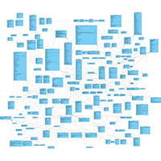
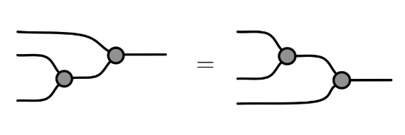
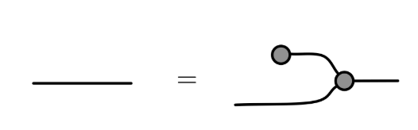
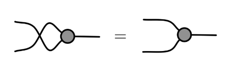

What happened to UML?
I was surprised to find that there are software developers who are not willing to engage in software design conversations if there is an UML diagram involved. I was baffled. I use UML diagrams all the time to elucidate design decisions before any code has even been written and I’m not sure what I’d do without them. In any case, surely diagrams are just tools, excellent tools but just tools to aid learning and understanding along with code and patterns and natural language. Why could anyone be so against them? So I looked on the internet and instantly found this:
“I would say that people that defend diagrams and notations are simply not able to grasp code, at all.” - AkitaOnRails
When I had gotten back up off the floor I continued searching. I quickly found something more constructive from the seemingly omniscient Martin Fowler:
“UML has got rather out of fashion it seems. Although this isn’t good for me financially, I can’t say I’m displeased to see a lot of rather dodgy UMLisms going away [however] I continue to find it a useful tool” - Martin Fowler link
This was written back in 2011, I guess the downward trend may have continued since then but there is some nuance in Fowler’s position. He describes different modes of UML which are (were!?) in common use. I can remember the days of MDA1 where UML diagrams were intended to be executable. They became so loaded down with detail that they lost all possible sense. UML may still be tainted with a mental association with MDA.
1 MDA was never going to work, for many reasons, but it is regrettable that some of the component oriented design concepts went down with it. We are seeing them come back now with the better micro-service designs but the same errors (wide interfaces, poor cohesion, accidental complexity) are still visible as they were in the early EJB days.
2 Rational was bought by IBM and “nobody get sacked for buying IBM.“
Related to the last point, UML may also be associated negatively with Rational Rose, an awful piece of software with so many bugs that it was a continual frustration to use. Unfortunately it gained market share2 and its colour scheme (yellow boxes with burgundy borders) stuck as the de-facto standard for UML from then on. I’ve used Rose and I guess that colour scheme stuck with me as well.
UML also suffered from abuse, like any other tool. It has been used, unsuccessfully in my opinion, for the documentation3 of large systems. Without proper care or attention diagrams balloon in both side and complexity to the extent again that they provide negative value.

3 Fowler’s blueprint mode
4 Not be confused with the discredited learning styles teaching methods.
Beyond the flaws in UML or its use I do believe there is another factor. Having worked with different people over time I have noticed that some people prefer diagrams of systems, while others prefer descriptions. In psychology these are known as visual and verbal thinking4 styles. To know if your preference is for visual or verbal thinking consider how you study. If you repeat the words to yourself in you head then that’s a verbal thinking style, if you draw a diagram, or picture one in your mind, with colours and some kind of meaningful layout then that’s a visual style. I strongly prefer visual representations and I guess that’s why I like UML. The point is that some people like diagrams more and other like words and that’s OK.
But anyway, regardless of how it happened we seem to have forgotten how to use what is just another tool. Another more useful mode that Fowler talks about is using UML to sketch ideas. This is how I use it and I think it’s where it really shines. Early diagrams like Booch’s and OMT5 diagrams, were difficult and unwieldy to draw with rhombi or circles on every relation to specify its type. We have now with UML a fairly universal and, if used well, lightweight visual language for communicating software design to our peers. For example, I love this article about software architecture because he uses UML to show visually the similarities between different approaches, and therefore the differences. I find processing that information verbally much more difficult.
5 The universally known GoF patterns book used a variant of this style of diagram.
So these are my recommendations for using UML if you haven’t given up on it already:
Use it for sketching and note taking. Don’t be worried about the details.
Use it for communicating simple design ideas. This is especially useful when discussing the choices before any decisions have been taken. Component diagrams are really useful here. I’ve found that most developers use these naturally. Also use it for communicating the basic patterns (composites, decorators, etc.) and structure (layers, cross boundary interfaces, etc.).
Don’t use it for documentation.
Use the 10% of UML that is useful:
The simplest class diagrams usually with just a few classes to show the relationship between them, hardly ever any members, no rhombi, just plain arrows with arity which is usually just an asterisk to indicate a collection or otherwise nothing to indicate 1-to-1.
The required and provided interface notation in component diagrams are useful and I tend to mix them freely with class diagrams, use packages and nodes well to indicate system boundaries.
Sequence diagrams can be useful but use them sparingly because they take time to draw. I find well crafted code to be easier to read and to write.
Functional programming diagrams
UML came from the object-oriented design community and does not afford much help when trying to visualise functional decompositions. The idea of a first-class function is not really very well represented. Of course you could use an activity diagram, kind of, but I’m not sure how far that would get you.
For representing functional structures I prefer computational graphs. There doesn’t seem to be a consensus here (again diagrams seem to be out of fashion in functional programming too) but there are some hints. Take this definition of a Monoid:
A Monoid is a set of values S that is closed under an associative binary operation \[f\] and contains an identity value \[I\] such that \[\forall x \in S\]; \[f(I, x) = x\]
Visually this could be expressed as a graph where the operator and the identity are, for example, circles, the operator being the one that receives two inputs.


The definition can be extended, for example:
If changing the order of operands does not affect the result then the operation is commutative and the monoid is called, unsurprisingly, a commutative monoid.
Integer addition, of course, is commutative, string concatenation is not. See how easy that is to visualise:

These visualisations are interesting in that they convey a lot of information very efficiently. I personally find them useful for understanding the concept, I can virtually “see” strings and integers “flowing” through the graph. Of course it could be just me but in any case it would be interesting to see if this kind of modelling could be useful for visualising functional ideas which are well known for being tricky to communicate.